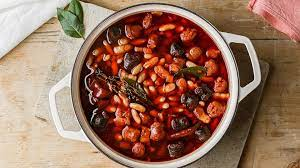

Fabada

Here is your recipe for Fabada
This reciple is simple, nutrituous and only takes 20 minutes to make!
Follow the instructions below to make some delicious Fabada:
Ingredients
- 2 tbsp extra virgin olive oil
- 4 cloves of garlic, sliced
- 1 onion, chopped
- 15 oz canned or cooked fabes
- ½ or 1 cup water
- 1 tbsp sweet paprika
- ½ tsp ground turmeric
- 2 bay leaves
- 1 tsp sea salt
- Black pepper to taste
Step-by-step instructions
- Add the sliced garlic and water to a small saucepan. Boil for a couple of minutes on high heat with the lid on, until the garlic is soft.
- Add the water with the garlic into a blender along with the diced onion and 120g fabada beans. Blend until smooth.
- Add the blended mixture back into the saucepan along with the rest of the beans, the diced tomato, paprika, turmeric, bay leaf, salt and pepper. If you want the dish to have a bit of a kick to it, you can also add 1-2tsp cayenne pepper.
- Cook over medium heat, with the lid on, for 10 minutes.
- Remove the bay leaf and serve while hot.